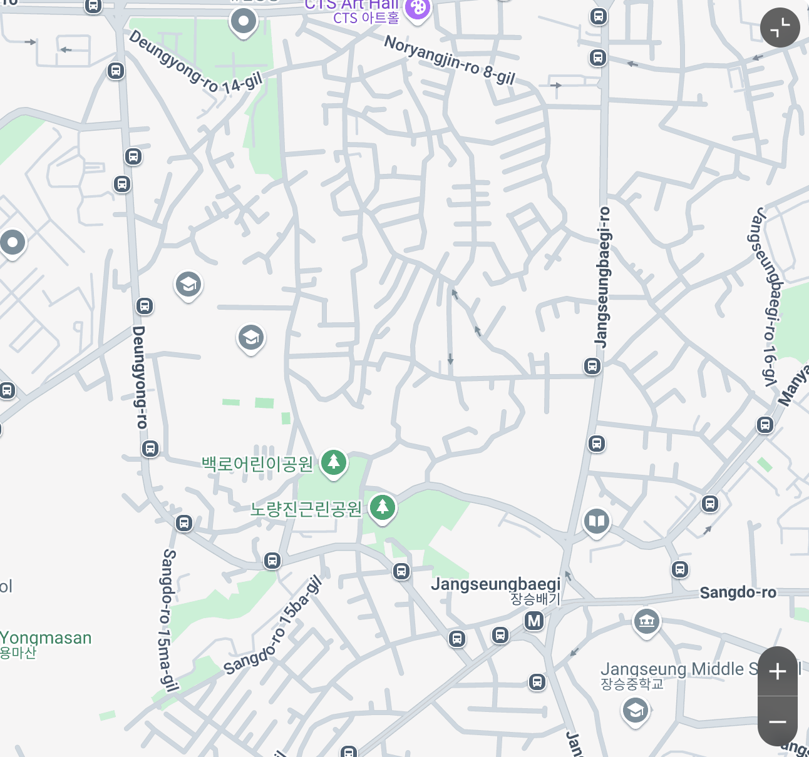

Ce n’est pas ici…
Fermer
Toujours pas trouvé.
Fermer
Ici non plus.
Fermer
La voilà ! 🐶
👉 Suivant
En réalité, Sôm est partie pour le paradis des chiens le 10 mars 2025.
👉 Suivant
Ce site a été créé pour garder vivant le souvenir de Somi.
👉 Aller à la galerie.